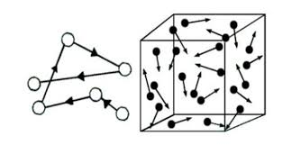
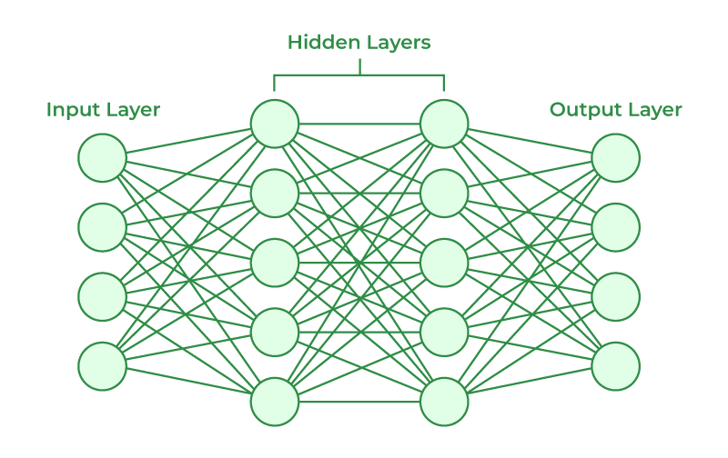
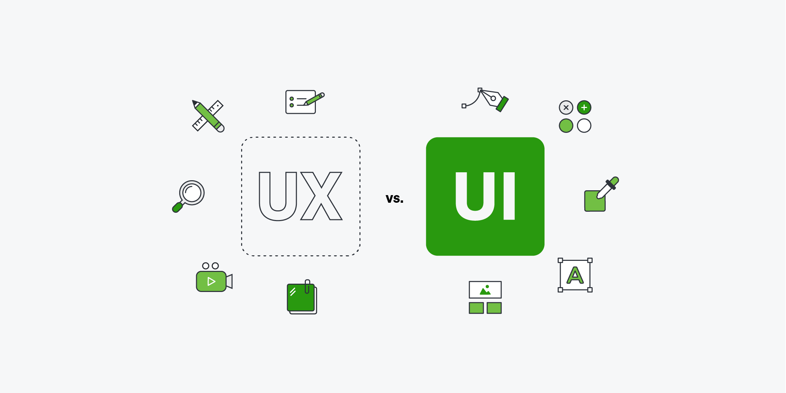

Software development
Building thoughtful digital tools and interfaces with a focus on usability and clarity.
SOFTWARE · DATA · CREATIVE THINKING
I turn curious questions into useful technology, from data-driven models to experiences made for people.
01 / THE PERSON BEHIND THE CODE
I'm Amilka, a Computer Science and Technology student interested in building things that make a difference.
My work moves between software engineering, data analysis, machine learning, and computational modeling. I enjoy finding the human question behind a technical challenge and working through it with care.
02 / WHAT I DO
Working across disciplines helps me connect the dots, not just write the code.
Building thoughtful digital tools and interfaces with a focus on usability and clarity.
Finding patterns in data and exploring what models can help us understand or predict.
Translating complex systems into experiments, simulations, and actionable insights.
03 / SELECTED WORK
A selection of projects from my public GitHub, spanning AI, software, simulation, and the web.
Showing 6 projects
AI & DATA SCIENCE · 2026
A final project from an AI and data science concentration, collected in a public notebook repository.
View repositoryAI TOOLS · 2026
A reusable AI agent skill for structured reasoning, tool orchestration, and data analytics tasks.
View repositorySOFTWARE · 2026
A Python repository exploring smart project management workflows.
View repository
04 / SIMULATIONCOMPUTATIONAL MODELING
Modeling particle motion with deterministic and stochastic forces in Python.
View repository
05 / MACHINE LEARNINGMACHINE LEARNING
A neural network that classifies diagnostic data using TensorFlow and Keras.
View repository
06 / WEBWEB & EDUCATION
A website for STEAM workshops encouraging tomorrow's young engineers.
View repositoryNo projects match that search. Try another term or category.
See all repositories on GitHub04 / GET IN TOUCH
I'm always interested in a good question, a thoughtful collaboration, or a new challenge.
Send me an email